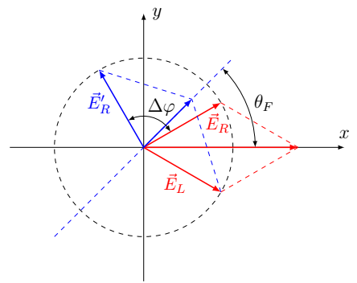

Y26 (2026) — English translation
The equation of electron motion is $$ m \dot{\vec{v}} = - \frac{m}{\tau} \vec{v} - q \vec{E}. $$Substituting solution в виде экспонент, we get $$ m\vec{v}_0\left( -i \omega + \frac{1}{\tau}\right) = - q \vec{E}_0, $$hence $$ \vec{v_0} = \frac{-q\vec{E}_0/m}{-i \omega + 1/\tau}. $$Then density currentа $$ \vec{j} = -q n \vec{v} = \frac{n q^2/m}{-i \omega + 1/\tau} \vec{E}, $$а conductivity $$ \sigma = \frac{n q^2/m}{-i \omega + 1/\tau}. $$
The equations of motion taking into account the magnetic field have the form $$ m \dot{\vec{v}} = - \frac{m}{\tau} \vec{v} - q( \vec{E} + \vec{v} \times \vec{B}). $$Substituting the solution in exponential form and writing the vector product through the components, we obtain
Let's move the terms with speed to the left side, divide the equations by mass and introduce frequency $\omega_B$ instead of the magnetic field: \begin{align*} \left( -i \omega + \frac{1}{\tau}\right) v_{0x} +\omega_B v_{0y} = - \frac{q}{m} E_{0x}, \\ - \omega_B v_{0x} +\left( -i \omega + \frac{1}{\tau}\right) v_{0y} = - \frac{q}{m} E_{0y} . \\ \end{align*} Multiply the first equation by $(-i\omega + 1/\tau)$, the second by $-\omega_B$ and add, we get $$ \left( (-i\omega + 1/\tau)^2 + \omega_B^2\right) v_{0x} = - \frac{q}{m}\left((-i\omega + 1/\tau) E_{0x} - \omega_B E_{0y} \right). $$Similarly первое equation домножим на $\omega_B$, второе на $(-i\omega + 1/\tau)$: $$ \left( (-i\omega + 1/\tau)^2 + \omega_B^2\right) v_{0y} = - \frac{q}{m}\left(\omega_B E_{0x} + (-i\omega + 1/\tau) E_{0y} \right). $$ Using relation плотности currentа and скорости $\vec{j} = -q n \vec{v}$, let us find (экспоненциальные множители одинаковы, therefore for currentов выполняются такие же соотношения, как and for амплитуд) $$ j_x = \frac{nq^2}{m} \frac{(-i\omega + 1/\tau) E_{x} - \omega_B E_{y} }{ (-i\omega + 1/\tau)^2 + \omega_B^2}, \quad j_y = \frac{nq^2}{m} \frac{\omega_B E_{x} + (-i\omega + 1/\tau) E_{y} }{ (-i\omega + 1/\tau)^2 + \omega_B^2}. $$Note that for/at нулевом магнитном поле $\omega_B = 0$ and поrayается соratio from предыдущего partа. Вид этих выражений совпаgives с указанным в условии, from него можно поrayandть выражения for проводимостей, equalsства $\sigma_{xx} = \sigma_{yy}$ and $\sigma_{xy} = - \sigma_{yx}$ follow directly from these expressions.
A field with right circular polarization rotates in the $xy$ plane counterclockwise, in real form the dependence has the form $$ E_{x} = A \cos \omega t, \quad E_{y} = A \sin \omega t. $$Переходя к комплексной записи, we get $$ E_{x} = \mathrm{Re}(A e^{-i \omega t}), \quad E_{y} = \mathrm{Re}(iA e^{-i \omega t}). $$Therefore for правой поляризации $E_{0y}/E_{0x} = i$. For левой поляризации обратного направления вращения можно добиться, изменив sign $E_y$.
First, let’s substitute a field with right polarization into the formula for the current density, that is, $E_{0x} = A$, $E_{0y }= iA$: $$ j_{0x} = \sigma_{xx} A + i \sigma_{xy} A, \quad j_{0y} = - \sigma_{xy} A + i \sigma_{xx} A. $$Here во втором equalsстве использовано соratio между проводимостями. Hence we get $j_{0y} = i j_{0x}$, and therefore $$ \vec{j} = (\sigma_{xx} + i \sigma_{xy}) \vec{E}, \quad \sigma_{+} =\sigma_{xx} + i \sigma_{xy}. $$Similarlyе вычисление for левой поляризации отличается только signом перед $\sigma_{xy}$.
The electric induction vector is expressed through the electric field and the polarization vector by the relations $$ \vec{D} = \varepsilon_0 \varepsilon \vec{E} = \varepsilon_0 \vec{E} + \vec{P}. $$Hence $$ \vec{P} = \varepsilon_0 (\varepsilon - 1) \vec{E}. $$Let us express density currentа via/through производную vectorа поляризации and сравним с expressionм via/through conductivity $$ \vec{j} = - i \omega \varepsilon_0 (\varepsilon - 1) \vec{E} = \sigma \vec{E}. $$From here we get
Since the refractive index is close to 1, the expression from the previous paragraph can be expanded to the first order, for circular polarizations we get $$ n_{\pm} = 1 + \frac{i \sigma_{\pm}}{2 \varepsilon_0 \omega} = 1 + \frac{i (\sigma_{xx} \pm i \sigma_{xy})}{2 \varepsilon_0 \omega}. $$Вычисляя сность, we find $$\Delta n = \frac{i (\sigma_{xx} + i \sigma_{xy})}{2 \varepsilon_0 \omega} - \frac{i (\sigma_{xx} - i \sigma_{xy})}{2 \varepsilon_0 \omega} = - \frac{\sigma_{xy}}{\varepsilon_0 \omega}.$$Note that conductivity $\sigma_{xx}$ cancels to first order.
Without loss of generality, we can assume that initially the wave is polarized along the $x$ axis, the wave amplitude is $A$. Let's imagine it in the form of a superposition of two waves with circular polarizations, we will write the vectors of complex amplitudes in the form of columns: $$ \vec{E}_{0} = \begin{pmatrix} A \\ 0\end{pmatrix} = \frac{A}{2} \begin{pmatrix} 1 \\ i \end{pmatrix} + \frac{A}{2} \begin{pmatrix} 1 \\ -i \end{pmatrix}. $$После прохождения via/through среду сные круговые поляризации for/atобретут сные фазы, amplitude поля после прохождения via/through среду $$ \vec{E}_1 = \frac{A}{2} \begin{pmatrix} 1 \\ i \end{pmatrix} e^{i k n_+ h}+ \frac{A}{2} \begin{pmatrix} 1 \\ -i \end{pmatrix} e^{i k n_- h}. $$Here $k$ – волновое число в вакууме. Вынося общую фазу $\Delta \varphi_0 = kh (n_+ + n_-)/2$, we get $$ \vec{E}_1 = e^{i \Delta \varphi_0} \frac{A}{2} \begin{pmatrix} e^{i k \Delta n h/2} + e^{-i k \Delta n h/2}\\ i (e^{i k \Delta n h/2} - e^{-i k \Delta n h/2})\end{pmatrix} = A e^{i \Delta \varphi_0} \begin{pmatrix} \cos \frac{k h \Delta n}{2} \\ - \sin\frac{k h \Delta n}{2} \end{pmatrix}. $$Поrayandли expression for линейной поляризации, повернутой на angle $$ \theta_F = - \frac{k \Delta n h}{2}. $$Sign $-$ означает, что поворот происходит по часовой стрелке. Substituting expression for сности показателей преломления and using соratio for частоты and волнового числа в вакууме $\omega = c k$, we get $$ \theta_F = \frac{k h \sigma_{xy}}{2 \varepsilon_0 \omega} = \frac{\sigma_{xy} h}{2 \varepsilon_0 c}. $$
The same result for the rotation angle can be obtained using vector diagrams. A wave with linear polarization can be represented as a superposition of two waves with circular polarizations and equal amplitudes. These waves can be represented as a pair of vectors in the $xy$ plane rotating counterclockwise and clockwise, respectively. In this case, oscillations in a wave with linear polarization occur along the bisector of the angle between two vectors of circular polarizations, initially this is the $x$ axis. After passing through the medium, an additional phase difference $\Delta \varphi$ arises between waves with circular polarizations. This means that for the same position of the wave vector with left polarization, the wave vector with right polarization will rotate by $\Delta \varphi = - k h \Delta n$. The sign $-$ is due to the fact that the oscillation has the form $$\operatorname{Re} e^{-i \omega t + i kh\Delta n} = \cos (\omega t - \Delta \varphi).$$ Результирующее oscillation все еще представляет собой сумму двух волн с круговыми polarizationми and equalми amplitudeми, но биссектриса между их vectorами повернута на angle $\theta_F = \Delta \varphi/2$, which coincides with the answer found earlier.

Let's substitute the expression for conductivity: $$ \theta_F = - \frac{D \omega_B h}{2 \varepsilon_0 c}\frac{1}{(-i\omega + 1/\tau)^2 + \omega_B^2}. $$За поворот плоскости поляризации отвечает вещественная часть этого выражения, чтобы выделить ее, раскроем скобки в знаменателе and домножим числитель and знаменатель на сопряженные выражения: $$ \frac{1}{(-i\omega + 1/\tau)^2 + \omega_B^2} = \frac{1}{\omega_B^2 + 1/\tau^2- \omega^2 - 2 i \omega/\tau} = \frac{\omega_B^2 + 1/\tau^2- \omega^2 + 2 i \omega/\tau}{(\omega_B^2 + 1/\tau^2- \omega^2)^2 +4 \omega^2/\tau^2}. $$Taking the real part, we get
As in the previous part, the difference in the real parts of the products $kh (n_+ - n_-)$ leads to a change in the direction of polarization, with the rotation angle $$ \psi_1 = - \frac{k h}{2}\mathrm{Re} \Delta n = 0.22 ~\text{rad} \approx 12.6^\circ. $$Выберем направление новой оси $x'$ вдоль повернутого направления поляризации, а $y'$ перпендикулярно ей. Разность мнимых компонент for/atведет к изменению амплитуд круговых поляризаций, therefore в повернутых осях комплексная amplitude имеет вид (несущественную общую фазу не учитываем) $$ \vec{E}_1 = \frac{A}{2} \begin{pmatrix} 1\\ i \end{pmatrix} e^{- \gamma_1} + \frac{A}{2} \begin{pmatrix} 1\\ -i \end{pmatrix} e^{-\gamma_2} = \frac{A}{2} \begin{pmatrix} e^{- \gamma_1} + e^{-\gamma_2} \\ i(e^{-\gamma_1} - e^{-\gamma_2})\end{pmatrix}. $$Here показатели экспоненты $\gamma$ оlimitяются мнимыми частями выражений from the condition: $\gamma_1 = k h \mathrm{Im}\, n_+ = 0.18$, $\gamma_2 = k h \mathrm{Im}\, n_- = 0.35$. Сдвиг фаз между колебаниями по осям $x'$ and $y'$ после учета затухания все еще $\pi/2$, therefore эти оси совпадают с главными осями эллипса поляризации. Значит ratio осей $$ \frac{a}{b} = \frac{e^{-\gamma_1} + e^{- \gamma_2}}{e^{-\gamma_1} - e^{- \gamma_2}} \approx 11.8, $$а большая ось повернута на angle $\psi = \psi_1$ relative to the original axis.
Since the standard expression for the Lorentz force is applicable, the magnetic force acting on the electron will be equal in magnitude to $qv_F B$ and directed perpendicular to the velocity. The modulus of the electron's momentum remains constant due to the law of conservation of energy, therefore the movement occurs in a circle and the law of change in momentum has the form $$ \omega_B p= q v_F B. $$Substituting expression for модуля momentumа $p = \varepsilon_F/v_F$, we find
We will analyze the graph using the formula from $\mathbf{B6}$ with the replacements indicated in the condition $$ \theta_F = C\frac{1 +\tau^2( \omega_B^2 - \omega^2) }{(1 +\tau^2( \omega_B^2 - \omega^2))^2 +4 \omega^2\tau^2}, \quad C = \frac{D_2 \omega_B \tau^2}{2 \varepsilon_0 c}. $$Общий sign несущественен, since направление поворотnot указано. В силу условия $\omega_B^2 \tau \gg 1$ в числителе and в первой скобке в знаменателе можно пренебречь 1: $$ \theta_F = C\frac{ \omega_B^2 - \omega^2}{\tau^2(\omega^2 - \omega_B^2)^2 +4 \omega^2}. $$ Angle поворота обращается в 0 for/at $\omega^2 = \omega_B^2$. ЭFrom графика it can be seen that в области отрицательных $\theta_F$ есть максимум модуля угла поворота. Let us find его положение аналитически. For этого введем вспомогательную переменную $y = \omega_B^2 - \omega^2$. Angle поворота выражается via/through нее как $$ \theta_F = C \frac{y}{y^2 \tau^2 + 4\omega_B^2 - 4 y} = \frac{C}{y \tau^2 + \frac{4 \omega_B^2}{y}- 4}. $$Знаменатель минимален for/at $y = \pm 2 \omega_B/\tau$, for/atчем for максимума модуля на графике $\omega > \omega_B$ and нужно выбрать отрицательный корень. Соответствующее value угла $$ \theta_1 =- \frac{C}{ 4 (\omega_B \tau + 1)} $$From графика 0 and максимуму модуля отвечают частоты $$ f_0 \approx 4.7 ~\text{ТHz}, \quad f_{\text{max}} \approx 6.5~\text{ТHz}. $$Hence ссу we find $\omega_B = 2\pi f_0 \approx 29.5 \cdot10^{12} ~\text{s}^{-1}$. From положения максимума $$ (2\pi f_{\text{max}})^2 = \omega_B^2 + \frac{2 \omega_B}{\tau}, $$hence we find $$ \frac{1}{\tau} = 13.5\cdot 10^{12} ~\text{c}^{-1}, \quad \tau = 7.4 \cdot 10^{-14} ~\text{s}. $$Value $\omega_B \tau \approx 2$ не очень велико, однако for/at вычислении положения максимума в answer входит квадрат этого выражения, что gives ошибку порядка $20\%$. From значения в максимуме $\theta_1 \approx -0.055$ we find $$C \approx 0.70,$$and we get вес Друде $$ D_2 = \frac{2 \varepsilon_0 c}{\omega_B \tau^2} C \approx 2.3\cdot 10^{10} ~\text{C} ^2\cdot \text{kg}^{-1} \cdot \text{m}^{-2}. $$
Using the value $D_2$ we find $$ \varepsilon_F = \frac{2\hbar^2}{q^2} D_2 \approx 0.125 ~\text{eV}. $$From the formula for частоты движения в магнитном поле $$ v_F = \sqrt{\frac{\varepsilon_F \omega_B}{q B}} \approx 0.7 \cdot 10^6~\text{m}/\text{s}. $$
After passing through the first polaroid, the intensity decreases by a factor of 2, and the polarization is directed along the $x$ axis. When moving along the $z$ axis, the polarization rotates through an angle $\varphi$ to the $y$ axis, and the intensity of the transmitted light will be equal to $$ I_1 = \frac{I_0}{2} \cos^2 (\psi - \varphi) = \frac{I_0}{2} \cos^2 (\psi - V h B). $$For/At движении в обратную сторону направление вращения поляризации меняется, therefore expression интенсивности $$ I_2 = \frac{I_0}{2} \cos^2 (\psi + \varphi) = \frac{I_0}{2} \cos^2 (\psi + V h B). $$Ratio $I_2/I_1$ минимально, когда прошедшего lightnotт and $I_2 = 0$. Это достигается for/at $$ \psi + Vh B = \frac{\pi }{2} + \pi m, $$